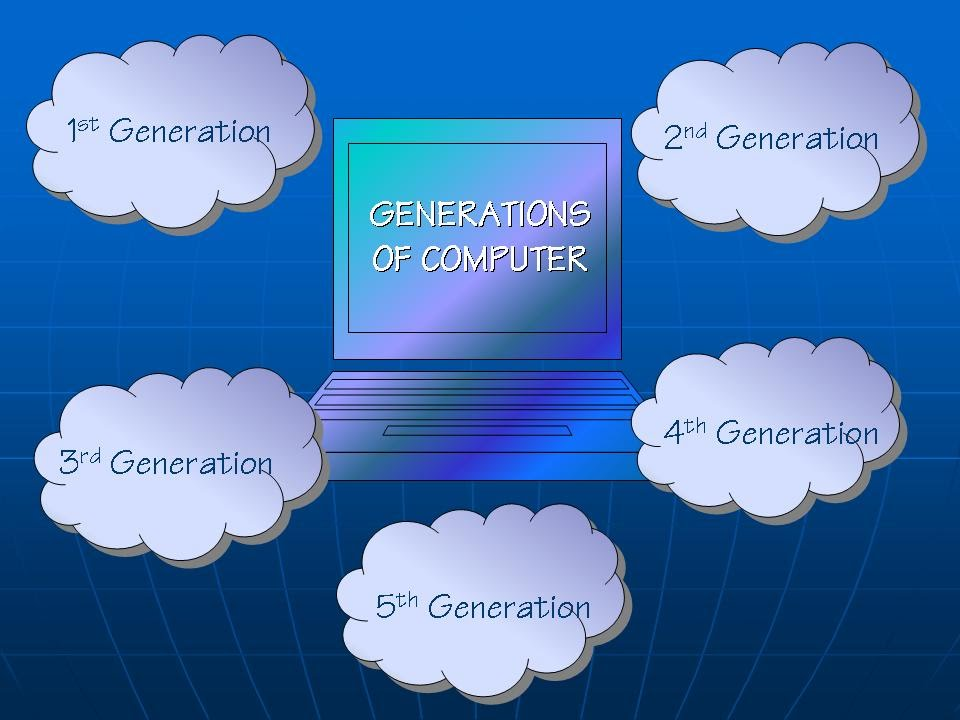

Generations of computer
| Home | First Generation | Second Generation | Third Generation | Fourth Generation | Fifth Generation |
|---|
We know that the evolution of computer started from 16th century and resulted in the form that we see today. The present day computer, however, has also undergone rapid changes during the last fifty years. The history of the Generation computer goes back several decades. Generation in computer terminology is a change in technology a computer is/was being used. Initially, the generation term was used to distinguish between varying hardware technologies. Nowadays, generation includes both hardware and software, which together make up an entire computer system.The computers of today find their roots in the second half of the twentieth century.Later as time progressed, we saw many technological improvements in physics and electronics. This has eventually led to revolutionary developments in the hardware.There are five computer generations known till date. Each generation has been discussed in detail along with their time period and characteristics.Each generation is defined by a significant technological development that changes fundamentally how computers operate – leading to more compact, less expensive, but more powerful, efficient and robust machines.
